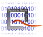
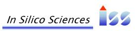

The surfcomp program suite is a toolkit for the comparison of molecular surfaces. Its executables are mainly written in C++ and the source code of all components is published under the NOVARTIS OPEN SOURCE license
|
Home
Download
Literature
|
surfcomp was initially developed in the course of the PhD project of Christian Hofbauer at the Novartis Institute of Biomedical Research in Vienna. It is a complete toolkit for the pairwise comparison of various kinds of molecular surfaces. A detailed overview of the method together with first test results have been published by Hofbauer et. al. in 2004 [1]. Christian Hofbauer's thesis provides an even more detailed description of the background theory and the method together with a literature survey and a full set of evaluation experiments and some applications to protein structure comparison. The source code of surfcomp and binary packages for several Linux distributions can be obtained from our download page. The user documentation and a description of the APIs of all parts can be found in the documentation section together with tutorials about how to use the program for small molecular surface comparison and protein comparison. Molecular surfaces can provide really intuitive pictures about similarities or dissimilarities between compounds. To get an impression about the information you can take a tour through the image gallery. |
The PhD project that led to the development of surfcomp was a cooperation between the In Silico Sciences group (ISS) at the Novartis Institute of Biomedical Research and the Electronic Media group of the Institute of Chemical Technologies and Analytics at the Vienna University of Technology .
 